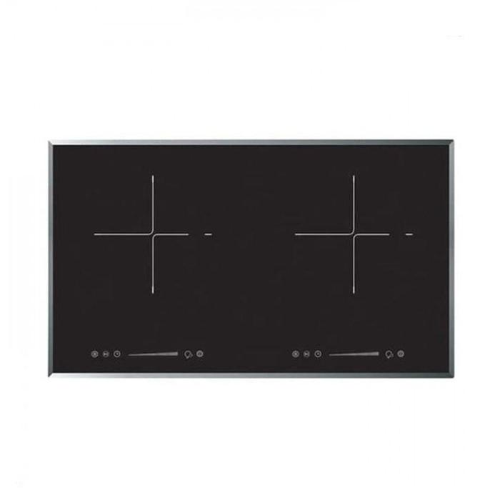
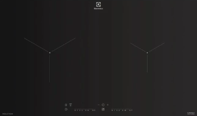
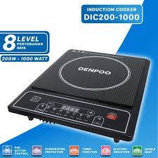

📊 Rekomendasi Kompor Induksi 2025
Perbandingan Produk Lengkap: Fitur, Kelebihan, Kekurangan, dan Rekomendasi
| No. | Produk & Brand | Jenis | Harga | Rating & Penjualan | Fitur | Kelebihan | Kekurangan | Rekomendasi |
|---|---|---|---|---|---|---|---|---|
| 1 |

Modena BI-1725Modena |
2 Tungku Kompor Tanam Induksi | Rp 6.500.000 | 4.8 (100 terjual) | 2,1 KW, PowerBoost, deteksi panci otomatis, 14 level daya, child lock, power management, Induction Hob 2 Zona Memasak, Sliding Touch Control, 9 Level + Booster, Schott Ceramic Glass, Residual Heat Indicator, Digital Timer + Stop & Go, Integrated Cooling System, Ø 210 mm Zona Induksi, Automatic Turn-Off, Child Lock | Memasak cepat, efisien, dan aman, Dapat digunakan dua panci secara bersamaan, Panel sentuh modern dan mudah digunakan, Pengaturan daya presisi & pemanasan cepat, Permukaan tangguh serta elegan, Menyala untuk menunjukkan permukaan masih panas , Timer digital dengan mode jeda operasi. Sistem pendingin internal menjaga stabilitas, Area panas besar dengan daya hingga 2.2 kW ,Keamanan tambahan lewat fungsi mati otomatis, Perlindungan dari pengoperasian tak disengaja | Harga premium, service center terbatas, spare part mahal | PREMIUM |
| 2 |

Electrolux EHI7260BBElectrolux |
2 Tungku Kompor Tanam Induksi | Rp 6.500.000 | 5.0 (250 terjual) | Zona Memasak, Power Levels, PowerBoost, Pot Detection Timer & Stop+Go, Auto Heat-Up & Auto-Off, Child Lock, Heat Indicator, Power Management, Preset Cooking Modes, Minute Minder, Material, Dimensi & Bobot, Daya Maksimal | 2 zone induksi, efisien untuk masak multi-panci, 14 tingkat daya, sangat presisi, Pemanasan cepat sesuai kebutuhan memasak, Kontrol otomatis menyala saat panci ditempatkan, Fungsi timer dan jeda masak praktis, Pemanasan otomatis dan proteksi keamanan ,Menghindari penyetelan tidak sengaja oleh anak, Indikator permukaan panas untuk keselamatan, Manajemen daya otomatis antar zona, 4 mode masak cepat (Soup, Boil, Stir-fry, Deep-fry), Durasi countdown hingga 99 menit, Permukaan ceramic glass — tahan dan mudah dibersihkan, 700 × 420 × 55 mm; berat ±8 kg, Sekitar 3.2 kW total | Permukaan kaca sensitif terhadap benturan | PREMIUM |
| 3 |

Rinnai RB-3022HRinnai |
2 Tungku Kompor Tanam Induksi | Rp 4.499.000 | 4.1 (30 terjual) | Front (Ø 210 mm): 1.8 kW – 2.1 kW; Back (Ø 160 mm): 1.2 kW – 1.5 kW (ESH Electrical, Blibli, Lazada Malaysia) ~3.4 kW; arus maksimal 15 A (ESH Electrical) 31 × 52 × 5.8 cm; berat produk ~5.5 kg; ukuran cut-out: 27 × 49 cm (ESH Electrical, myhartono.com) Tempered Ceran Glass (Schott Ceran®) (Blibli, cshgroup.com.my, myhartono.com) | Zona memasak ganda dan 9 tingkat daya memungkinkan fleksibilitas memasak yang sangat baik. Booster cocok untuk kebutuhan cepat seperti merebus air. Schott Ceran® memberikan estetika modern sekaligus daya tahan tinggi. Fitur sensor panci, timer, auto-off, dan child lock menghadirkan keamanan maksimal. Desain built-in yang ramping dan elegan menyatu dengan dapur minimalis. | Tidak berfungsi saat listrik padam, permukaan sensitif | RECCOMENDED |
| 4 |

Fotile EIG30205Fotile |
Kompor Tanam Induksi | Rp 4.189.000 - Rp 5.250.000 | 5.0 (20 terjual) | 9 tingkat daya, panel kaca keramik, 12 tembaga pemanas, child lock, auto shut-off,Zona Daya Berbeda Atas 1.5 kW / Bawah 2 kW — mengoptimalkan performa tiap zona | Kontrol suhu presisi, sistem keamanan canggih, garansi resmi 3 tahun | Hanya kompatibel dengan cookware ferromagnetic, butuh listrik stabil | RECCOMENDED |
| 5 |

Denpoo DIC200-1000WDenpoo |
Kompor Induksi Portable | Rp 250.000 - Rp 300.000 | 4.6 (1.800 terjual) | Daya 200-1000W, kaca kristal, overheat protection | Harga sangat terjangkau, permukaan tahan panas, cocok berbagai ukuran wajan | Response time lambat, performa terbatas | BUDGET FRIENDLY |